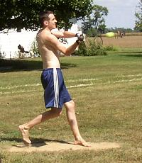
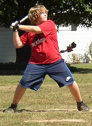
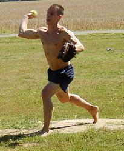
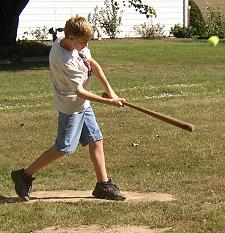
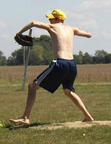
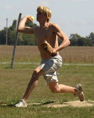
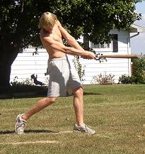

Patrick Cork finished the day 13-for-27 with 3 triples, a homerun and 5 RBI on the afternoon. |
Greg Howard was 5-for-21 with a pair of homeruns and 3 triples in the doubleheader. |

Evan Woodard connects on one of his 4 singles on the day. |

Greg Howard was 0-2 in the doubleheader allowing 5 earned runs in 7 innings of work. |

Evan Barmes made a successful debut on Saturday finishing the doubleheader 10-for-28 with 3 RBI and 3 runs scored. His bases loaded single in the 8th inning of game number two proved to be the game winner. |

Patrick Cork picked up two wins allowing just 3 runs and 8 hits and striking out 23 in 14 innings of work. His 16 strikeouts in game two were just one shy of his career high. |

Robert Trimble got a no decision in game number two allowing just one run on 9 hits in 7 innings.
|

Robert Trimble played just one game on Saturday and finished 1-for-10 with a single.
|
|